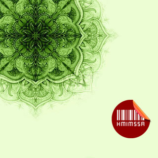
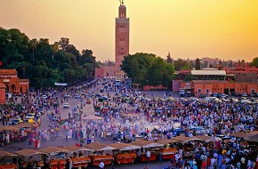
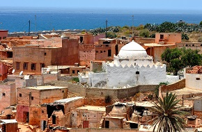
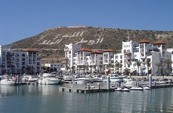
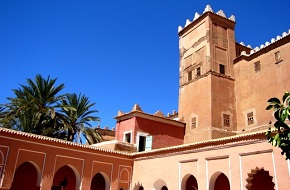
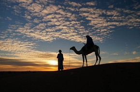
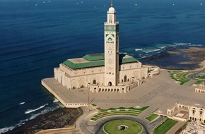
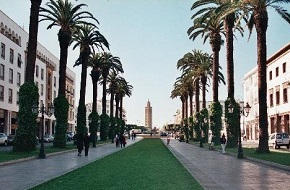
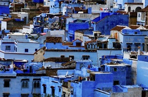
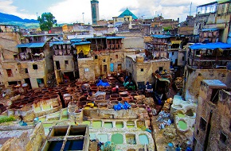

Home
Marrakech
Asfi
Agadir
Ouarzazat
Sahara
Casablanca
Rabat
Tanger
Fes
Services

jawal Travel
Pour reserver un ticket tu doit enregester ou Connecter si tu as un compte :
Inscrition

Jamaa Lafna & koutoubia

Poterie de Safi

Port de Plasance Marina Agadir

kasbah de la palmeraie

Desert Zagora

Mosquée Hassan II

Avenue Mohamed V

Les maisons bleus

Les Tanneries de Fès